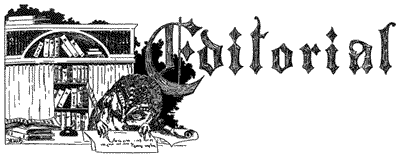
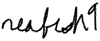

|  A little after the fact, but letters from the editor are rarely topical anyway. Issue 5 took a lot longer than it should have, it was out on time, excepting this editorial <g>, but it still sucked up a huge amount of time. Scenelink keeps doing things till they hurt, and issues are beginning to hurt. Sure, the quality is a lot better than any other emag in the scene that publishes with a monthly deadline, but quantity and efficiency have been poor. It's partly our fault, we expect people who can write well the first time, without having to be reminded with daily emails, and it seems there are about 3 people in the scene who meet those criteria and have the motivation to help out. With the size of our current staff, choices have to be made. Right now we're choosing to shift energies from monthly features to daily scene and release news. People seem to be more interested in the daily updates, judging from responses we've received, so we're going to start spending less time on features, at least till we can find some more people to help out with the features. So in the future, expect a lot less. Perhaps we'll meet our current volume of features and perhaps not. Quality will always remain high, either as a corollary to, or function of, our pompous claims of journalistic integrity. If you think features should be expanded, or improved, or sabotaged, consider joining the staff. Till we find more writers of the caliber we're waiting for, this is about as good as it gets. Not that there's anything wrong with that of course... Ian  |